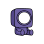
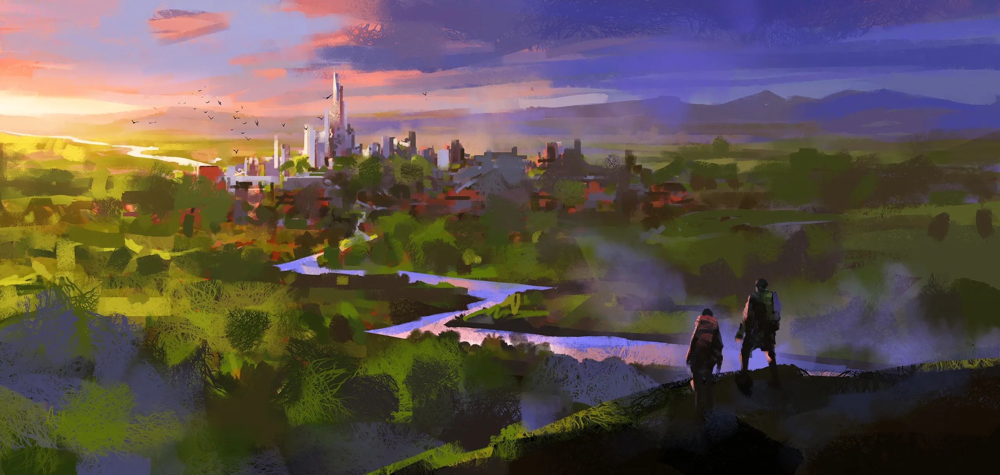
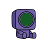
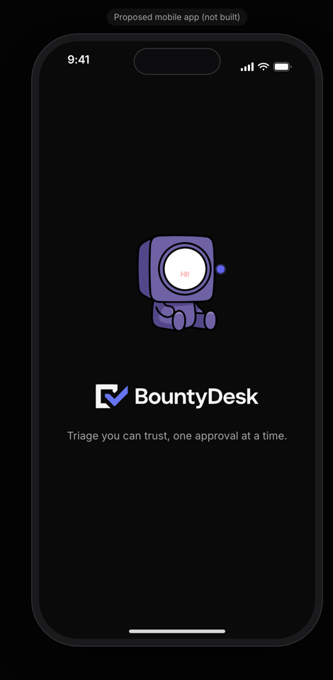

Brand assets
The BountyDesk marks, the Agent Bounty mascot, the color and type tokens, and the images the product ships. Everything here is read from the repo: the files in public/, lib/mascot/catalog.ts and app/globals.css. Add ?theme=light to this page to flip the page chrome; the previews below always show both surfaces.
Logos
Five SVGs, each in public/ and copied to assets/. The lockup, the mark and the small mark are drawn with near-white (#F5F5F5) letterforms, so they are made for the dark surface the product ships on. The tick is a single indigo shape (#6774F0) and reads on either surface.
logo-lockup.svgUsed in the site header and footer, the login page, and the app sidebar when it is expanded.logo-mark.svgNot referenced by a page in the repo today. Use it where the wordmark would repeat nearby.logo-small.svgThe collapsed sidebar rail (30 by 22) and the panel header (16 by 16). It is drawn for that size, not the lockup scaled down.logo-tick.svgThe favicon in these docs. The only logo file that holds up on a light surface unaided.
trix.svgThe small purple mascot icon on the public /submit page and the legal pages, at 32 pixels.app/icon.svgThe Next.js icon file. It carries its own dark plate, so it needs no surface to sit on.Usage notes
- Put the lockup, mark and small mark on dark. Their letterforms are #F5F5F5, so on white they lose most of the shape. The light previews above show that on purpose. The product defines a light theme but ships dark only.
- Use the lockup when there is room for the wordmark, the small mark when there is not. The sidebar swaps between them as it collapses, and gives both the alt text "BountyDesk".
- Decorative uses carry empty alt text. The panel header mark and the Trix icon are beside text that already says what they are.
- Do not recolor. The indigo is #6774F0 in the files and the UI brand token is a different indigo (below); do not swap one for the other.
Agent Bounty, the mascot
Fourteen poses, one SVG each in assets/mascot/, named in MASCOT_STATES in lib/mascot/catalog.ts. A report's state picks its pose through MASCOT_FOR_STATE, so the queue board and the case file never disagree. An unknown state falls back to idle. Each SVG carries its own looping animation; only MascotFloat (the queue board) pauses it when the visitor prefers reduced motion. AnimatedMascotSvg elsewhere has no reduced-motion handling.
Where states are not one to one
- The case file lifecycle list picks a pose per row in
stepMascot(lib/reports/case-view.ts): intake isingest, the investigation row isreproducingwhile current,infra-hiccupwhen skipped andidlebefore it is reached, the verdict row isscanning, the approval row isawaiting-approvalordenied, and the last row isdeliveredor, once done,celebrating. canary-found,chillingandcowboyhave no report state or lifecycle row pointing at them. They appear in the login page mascot marquee, which renders every state inMASCOT_STATES(app/login/page.tsx), and in this design system, nowhere else in the product yet.
Color
Tokens come from app/globals.css, defined in oklch. The product forces the dark theme on <html>. The light values exist for every token but nothing renders them today.
oklch(0.145 0 0)Light: oklch(1 0 0)oklch(0.178 0 0)Light: oklch(1 0 0)oklch(0.985 0 0)Light: oklch(0.145 0 0)oklch(0.708 0 0)Light: oklch(0.556 0 0)oklch(1 0 0 / 10%)Light: oklch(0.922 0 0)oklch(0.585 0.233 277.117)Same in both themesoklch(0.785 0.115 274.713)Same in both themesoklch(0.704 0.191 22.216)Light: oklch(0.577 0.245 27.325)Phase palette
One color per phase of the pipeline, spread apart in hue. Amber is the only warm one and belongs to the phase that needs a human. Closed has no hue on purpose. Every dot or chip sits beside its own label. Values are the dark ones; the light ones are darker (see Accessibility for contrast).
oklch(0.7 0.15 250)Light: oklch(0.52 0.17 250)oklch(0.75 0.13 195)Light: oklch(0.55 0.13 195)oklch(0.72 0.18 330)Light: oklch(0.53 0.2 330)oklch(0.8 0.15 75)Light: oklch(0.62 0.15 75)oklch(0.72 0.16 150)Light: oklch(0.52 0.15 150)oklch(0.55 0 0)Same in both themesRules
- Brand indigo is for emphasis, not status. Status is the phase palette.
- Radius is 0.625rem (
--radius), with the larger steps derived from it as multiples (0.6, 0.8, 1.4, 1.8, 2.2 and 2.6 times). - Phase colors appear three ways in
components/phase-dot.tsx: a dot, ink for text and spinners, and a pill with a 15 percent fill of itself.
Type
Inter for everything and Geist Mono for ids, hashes and code, both loaded in app/layout.tsx. The scale is declared once in app/globals.css, each level with its own leading, weight and tracking, so a heading is one class.
Pixel sizes are the rem values from the theme at a 16 pixel root. Display is shown smaller here than the 4rem the landing page uses.
Backdrops and images
Four WebP backdrops in public/backdrop/, all used on the landing page (app/page.tsx). The product has no Open Graph image file in the repo, so there is none to show.


/email/scanning.png for the outbound email markup (checked in lib/email/markup.test.ts).Mobile app icon and splash Proposed
The mobile app is a proposal, not built. Its splash is screen M1 (screens/m1.html): the greeting pose, floating, above the lockup at 230 pixels wide, on the dark brand surface (oklch(0.145 0 0)), with a shimmering status line at the bottom in place of a spinner. The proposed app icon reuses the web icon above: the tick-shaped mark on a #0A0A0A plate. No iOS layered icon, Android adaptive icon or native splash image has been drawn.

M1 SplashProposed. Greeting pose and lockup on the dark surface.Sources: public/*.svg, public/backdrop/, public/email/scanning.png, app/icon.svg, lib/mascot/catalog.ts, lib/reports/case-view.ts, app/globals.css, app/layout.tsx, components/app-sidebar.tsx, components/phase-dot.tsx.